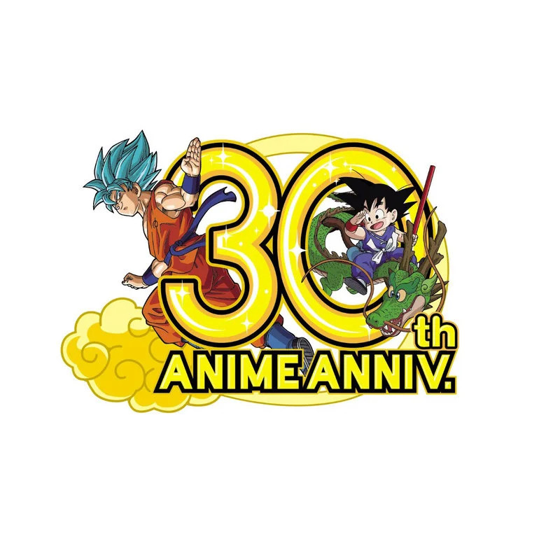
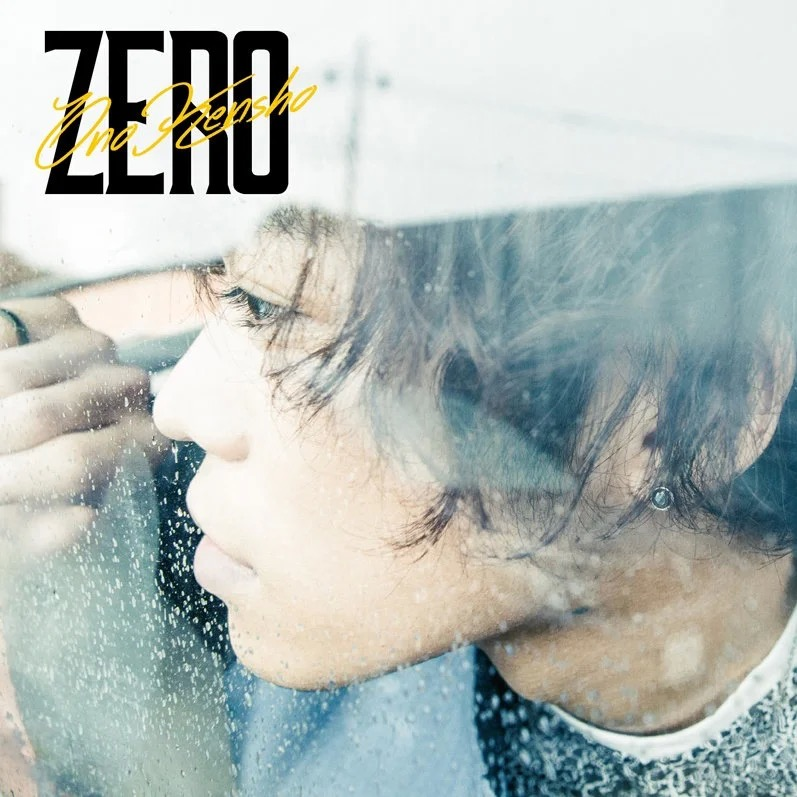

This is the first opening to Assasination Classroom.
This opening is using quite an exciting tone compared
to the atmosphere in the classroom and the Name of
the anime. Just the song alone sounds very nice to me,
and I really enjoyed the rhythm of the song. However,
it does sound very concerning when we take the phrase
Assasination into something fun to do. Killing someone
should not be something fun to do, not something that
should be assigned to middle school children. It
wasn’t till later on we discovered the background
story of Koro sensei finally understanding the purpose
of this assassination, and how it is more than
meaningful for these kids and the entire world.
Bye Bye Yesterday
This is the second opening for season two of
Assisnation classroom, and is also the final
opening for the entire show. This again, resembles
a very happy and energetic tone. However, this
is the point where the show is about to end,
the kids have no time left before they have to
kill Koro Sensei. The animation really shows
the tragedy behind a very fun classroom that
is about to happen. The lyrics are also very to
hear about. The concept of moving on to the
future, meaning that something in the present
is about to end. It may be the last for middle
school, the last day before they have to
complete the assassination, or the last time
they get to see the big yellow octopus teach
them a lesson.
Until the Day we Meet Again
This is the second ending for Season two of
Assination classroom, and this is probably the
saddest ending I have ever heard in anime history.
This ending shows the ending for Koro sensei. All
the memories, all the fun and sad movement e
class has been through with this octopus. Koro
sensei is the person that gave these people
their own direction and meaning in life after
they have been abandoned to e class, classified
as failures in the community. And yet, these
kids have to kill this teacher with their own
hands. Just like the lyrics say, until the day
we meet again. There will always be an end to
a story, but a new one will always form when
the old one ends, that’s how life works.
Dragon Ball Songs
CHA-LA-HEAD-CHALA
This is probably the most classic anime opening of all
time, besides the very first opening in the original
season. The very existence of this song is generational.
The start of Dragon Ball Z meant so much for the people
at the time. Unfortunately, I am not old enough to fully
experience that, but as a Dragon Ball Fan, I really can
tell the excitement in this song. As an audience, this
is another chance to see Goku and his friends take on
new enemies and make improvements along the way. This
opening itself took over 200 episodes in the series,
which shows the significance of the song.
Dragon Soul
This is probably one of the worst angling dragon ball
openings ever. However, I still do think that this song
is underrated. This is the beginning of a remake for the
original Dragon Ball Z series, known as Dragon Ball Kai.
Many people figured that the original series took too
long for the frights, and contained too many episodes
that didn't help with the progress of the plot. For
instance, the original Goku and Frieza Battle took over
20 episodes to finish, making it the longest battle in
all anime history. Back in the day when this was shown
weekly, Goku and Frieza fought for almost 5 months. The
song itself is more in favor, maintaining the excitement
while making a little more metal music in it. Most
importantly the music video displayed in the anime
looks so good.
Kuu-Zen-Zetsu-Go

This is the opening for Dragon Ball Kai: Majin Buu saga.
The reason I am specificiing it like this is because the
company put Majin Buu saga as a separate season when they
were making Dragon Ball Kai. This is also a very exciting
opening in the Dragon Ball Franchise. When I was comparing
CHAD LA HEAD CHALA with Dragon Soul, I thought they were
kind of close but this song is better than the original Buu
was opening in every single way. The animations and the
rhythm of the song really puts the hype of the Buu Saga to
its greatest. I especially like the transition from vegito
to gohan and gotenks. The team understood that people watching
Dragon Ball Kai are already watched Z, so they put more
resemblance in the plot.
HERO ~ The Song of Hope
This is a song that originated from the 2013 Dragon
Ball Z movie Battle of gods. This is probably my
favorite Dragon Ball Song, ever, period. This song
played when Goku was fighting Beerus, absorbing the
God form’s power, and using it to its own will. That
yell of Goku, stop enjoying destruction, was the most
emotional line I have heard in Dragon Ball. With the
combination of the song and the line, it makes the
battle more than epic. Later on we know that this
movie was an introduction to the new series Dragon
Ball Super. I have also seen many fan made MVs using
this song, which makes this song more than meaningful
to me, the different perspectives shows the impact of
the song and Dragon Ball as a series.
Light Pink
This is an ending for the Revival F saga in Dragon
Ball super. This is a very underrated song for a lot
of the community members. I especially enjoy the songs
that have a soft intro, but progress into a heavy tone.
This shift in emotional feeling brings my attention to
the song. Seeing the sciences and memories brought by the
series, and potentially becoming better in the future,
sets the ground for this song, and for the series at that
time. This is the early days of Dragon Ball super, before
it actually got into some of its original plots. The Sakura
in the background also adds an extra layer of meaning to
this song.
Don't You See
This is the best ending in Dragon Ball GT, also sung
by Izumi Sakai. This ending has a very establishment
in family and bond. This is a very ironic setting
since this is played during the Baby saga, where
Goku’s entire planet is being brainwashed by Baby.
This ending just makes a great contrast with the
despair that Goku is experiencing right now. The
purpose of a Dragon Ball continuation series was to
show how Goku is doing with his family and friends,
and this ending has done the perfect job for that.
I have also sung a version of the song just like
the GT opening.
Dan Dan You're Charming My Heart
This is the favorite Dragon Ball opening for the
original audience. To many people, Dragon Ball GT is
the perfect ending for Goku’s story. Although Gt is
technically not canon by Akira Toriyama, it is still
considered a very successful series to watch. This
Opening, until Kai and Super came out later, was my
favorite Dragon Ball opening. I have personally sung my
version of this song multiple times in the past, and
the lyrics are beautiful. They perfectly represent my
feelings towards Dragon Ball. It is like a fantasy
that I don’t want to end, while I have to let go, and
have the memories speak for themselves. There was
another version of this opening sang by Izumi Sakai,
which brings a more complete feeling than the original
version. I personally still prefer this version.
Inazuma Eleven Songs
Tachiagariyo
This is the very first opening of Inazuma Eleven.
This is a very surprising series to me, since
putting super powers in soccer sounded very
assured, but the show delivered the concept in
a very successful way. A very exciting start,
where we get to experience the pure effort the
main character went through and pure joy for
every match they won. It brings the simplest
form of sport in general, seeking higher points
and meeting new friends along the way. The first
opening shows the hard work and desperation of
Endo and his friends turning a soccer that only
had Severn players into the best soccer team
in the world.
Maji de Kansha!
This is the first opening for the second season
for Inazuma eleven, where Endo is starting to face
new enemies after they achieved a championship in
Japan. This season is honestly the most depressing
one out of the three, since they are putting
beliefs and values on to soccer, which is right,
and which is wrong. Putting Endo, someone who has
always been the definition of position
reinforcement in a position of reality. This is
part of the character development that he has to
go through. However, this song, from the lyrics
to the rhythm, are all very happy and energetic.
The main reason why I like this song, is because
this is the song they played when Goenji returned
when they were fighting Epsilon, which is still
my favorite moment in all of the seasons.
Katte Nakouze!
This is the first opening for the third season of
Inazuma Eleven, after Endo defeated Alien school,
they faced off into the international football
frontier, where they were facing off players from
all over the world. This to me, is the best arc of
all the series. The director really did a good
job developing all the characters in the match
ups. This is very impressive to do, since each
team is eleven players, and we face up dozens of
them, and yet, I can still remember the
characters on a lot of those teams. This opening
is also the best opening in all the seasons.
With an energetic voice it brings challenges
and moments Endo has to face, while maintaining
a very hype and exciting attitude. This is
another demonstration of Endo and his team
in general.
Seishun Bus Guide
This is my favorite ending in all of the seasons.
This ending took a very different approach from
the rest of the songs in the series, where the
focus is actually on the three female managers
of the soccer team. We know that in most matches
the managers are mostly sitting on the bench and
don’t affect the game that much. These beautiful
girls are kind of left out during most games,
but this ending gave them a chance, and put the
lights on the girls. This is a very nice touch,
since the audience would love to see a balance
between the players and the managers. Although
they don’t contribute much in the games, they
have always supported the team when they
need them.
Ryuusei Boy
This is another very nice ending in season two,
along with Seishun Bus guide. Something that I
have always been thinking about during the Alien
school arc is to see Endo, Kido, Goenji, and
Fubuki work together. However, during the arc,
Goenji has left the team for a while because of
her sister, and Fubuki had issues with his
secondary personality. Therefore, we really
don’t see the big four collaborate until the
very final match. However, this ending really
highlighted the four together, foreshadowing
how strong Raimon would become if these fours
were all functioning. In the end, we beat the
Genesis team.
Ten Made Todoke
This is the first opening for Inazuma Eleven GO. A
new generation to the Inazuma Eleven series. We
get to see new characters show up as the new
generation of Raimon. This story happened 10
years after Endo achieved world champion. Many
people say that GO is not good, I have to say
that season one of GO is actually OK. This
opening is a very nice introduction to this new
generation and our new main character of the
series, Tenma. We see how this new boy turns from
someone who had no skills in soccer turns into
probably the most overpowered character in all
the series.
Naseba Narunosa Nanairo Tamago
This is the second opening in the first season of
Go. I do think that this opening sounds better
than the first opening, but the first one is an
essential step as the introduction to the series.
This opening, however, is used multiple times in
the series, when Raimon is about to turn the game
into their favors, hyping up the emotions of the
audience. I still remember when Tenma first sang
his avatar in the series, this song really brings
the excitement up and shows how our boys have made
the come back in their challenges and the
revolution they are planning to do.
Kandou Kyouyuu!
This is the best opening in all of the Inazuma
Eleven Go series. This is the second opening of
season 2, where Tenma is trying to save soccer
from the enemies in the future that are trying
to change history and eliminate soccer from its
very existence. We can see a lot of time
traveling elements in the opening and how Tenma
is facing parallel worlds and trying to find
the correct path out of them. There are also
very reflective moments in the series, and
Tenma has to walk forward as the captain of
the team, and fight against all the obscures
and potentially enemies.
Raimei! Blue Train
This is the fourth and final opening of season two
in Inazuma Eleven GO. This song is mostly filled
with high speed raps and is showing the final battle
between the second generation kids in the future
against the theoretically strongest soccer team in
all history. To be honest, the plot of the second
season was kind of bad. I skipped most of the middle
part, until we get to see how Fei was actually a spy
with his memory erased, which is shown in the
opening. I really enjoyed the rap and the transition
into the main course later on in the song, and I
think it sounds like a final epic battle of
the series.
Kuroko no Basketball Songs
Can do
This is the first opening in Kuroko no basketball,
one of my favorite anime of all time. The first
opening is always the classic one that we all
love and listen to, and I would say that this is
probably my favorite first opening out of any
anime. The rock style music with the excitement
heading down a long journey really fits my
preferences for an anime opening. The line of
can you do it, turns into I can do it, and we
can do it. Very simple lines, but delivers a very
strong meaning for the song, and the series, as
they are about to face off against some really
busted basketball players.
The Other Self
This is the first opening of the second season for
Kuroko no Basketball. The animation of this opening
is just phenomenal. They have no reason to put such
a high quality of art style and animation into the
opening, but they did, this opening looks amazing.
The portrait of each character on the field, and
how Serin has been training for the winter cup,
really delivers a very beautiful story just from
the opening itself. We see the potential
challenges in the story, and how everyone is
trying the best to make it out of the struggle.
This is the moment after Serin lost last season.
There is another half of the song that they don’t
show in the anime, but the second half is what
makes the song more thoughtful, discovering
meanings behind victories and the purpose
of effort.
FANTASTIC TUNE
This is the second ending for season two, when the
main characters are finally facing off against the
ones that defeated them last season, Touou. This is
a very hard challenge that they have to face in
order to take their championship. This is also one
of the best games out of the entire series. This
ending is sung by the voice actor Ono Kensho, who
also happens to be the voice of Kuroko, our main
character. This ending really portrays the fights
Serin has to go through, and despite Serin Goofing
around sometimes, these are the moments where they
have to be serious and put effort into these fights.
My favorite part of this ending is when they won
against Touou, the final fist bump between Aomine
and Kuroko, and transitions into the ending, that
was perfect.
ZERO

This is the second opening in Season three of Kuroko
no Basketball. This section of the anime is covering
the past of Kuroko, Teiko middle school, where we
see how Kuroko has become what he is today, and the
reason why he is choosing to fight over his teammates
in the past. This is also sung by Ono Kensho, and I
think this is the best one so far. I am glad that
they took an actual arc to explain everything
properly to give us a better idea as to how
everything got to this point where they were fighting
against Akashi. Since I watched Kuroko no basket
while I was in middle school, this opening really
had strong resemblance to me at the time. I would
listen to this every PE class or whenever I get to
play basketball, and yes, I started playing
basketball because of this anime.
Memories
This is the third and last opening of season three.
The name of this opening is called memories, which
shows that this will be the last battle for Kuroko,
and we are going through a lot of the things we have
been through to get to the finals. The entire last
arc is about the fight against Akashi, the final
Boss of the series. The opening is my favorite
Kuroko no Basket song, and there is a MV on YouTube
that I still watch to this date that uses this song
to portray this final battle. It is very interesting
how the lyrics of this song contain a lot about love
and relationship while hosting a basketball anime,
but I do enjoy it a lot, as the lyrics are showing
the feeling of Kuroko towards his teammates and
basketball in general.
Ambivalence
This is the second ending for season three of Kuroko
no basketball. This is matching with the Teiko middle
school opening, where we see the memories of the
generation of Miracles in their middle school age.
When I first heard the song, I thought this was a
very peaceful and warming song. However, after
knowing what happened in the basketball club, this
ending actually turned into something very sad to
think about. It is the time where you wish you could
go back to, but things have just changed, and you
have to move forward from it. The relationship
between Kuroko and the rest of his teammates
started very well, but as people change, everything
starts to fall apart.
Pokemon Xyz Songs
XY&Z
This is the opening of the Pokémon XYZ season. This is
probably one of the best openings I have heard in anime
history. This song is quite literally the definition of
hype and energetic, it is used multiple times in the series
when Satoshi is having a major fight, which is very suitable
for a Pokémon battle. This song is also sung by the voice
actor of Satoshi herself. The lyrics also represented the
experience and emotions between Satoshi and Greninjia,
when they do their own bond evolution in battle. I listen
to this a lot, pretty much in any kind of situation, it
brings my emotion back up. I have also made several
montages using this music, and I just find how this
music fits with various scenes, from sports to fights,
anything fast pace
Get a Ban Ban
This is the second opening in the XY series, honestly,
one of the better Pokémon openings, but not as good
as XYZ. I really enjoy the animation that it plays in
the show. The scene where Satoshi is holding Clemont’s
shoulder at their camp and running in front is something
I really admire, a good relationship between the boys,
where we can just goof around and laugh. During the time
when I watched the show, we were just finishing a camp
journey from school, so this anime really felt relatable
to me. Another scene where Satoshi is facing off Clemont
as a gym leader in the middle of the series, feels like
a fated battle.
Dream Dream
This is pretty much the character theme song for my
favorite female character in the Pokémon franchise,
Serena. She is the first girl to directly show love
interest towards Satoshi, and did get a kiss at the
end of the show. Unfortunately, this is a show for kids,
so they can’t suggest any romance topics in the show,
but as adults or young adults, it is kind of sad that
they didn’t go together at the end of the series. XY
also incorporated a new form of Pokemon contest,
POkemon performance, where the trainer is supposed
to create effects and Tyler’s from Pokémon’s skills.
Serena almost succeeded to become the Queen of the
Kalos Region, and just like Satoshi, this theme
plays whenever she is on the stage performing.
Sword Art Online Songs
Crossing Field
This song is the definition of nostalgia to me.
Sword art online is the anime that got me into
watching more anime. This opening is the first
thing I have heard from this anime, so this to
me seems to be the beginning of everything. This
is a very beautiful song sung by LISA, a very
famous singer in Japan. I have also tried to
sing this song on my own, but the tone is way
too high for me. This song perfectly described
the situation of Kirito and his friends being
trapped inside this VR game, and they will
make their way out of the game with effort
and time.
INNOCENCE
This is my favorite opening in sword art online
season one, and it also covers my favorite game
in season one, ALO. This opening is covering the
mission to rescue Asuna, as she was not able to
escape the game with the others. The transition
from a soft music to a high heavy intro has
always been my favorite music taste, and this
opening really fulfills my desires. The
animation also covered the identities between
people in and out of the game, while
foreshadowing some of the plot of this arc.
ADMAS
This is the first opening in season three part one
of sword art online. This has been a continuation
of the series for over four years, a very big
moment for me, as this anime means a lot to me. To
be honest, this is a very hype start for this new
season, and I was very interested in the bond
between Kirito and this new male character. At
the end we know that Eugeo has influenced Kirito
so much, it became part of his identity and
reputations. I have to admit, I was so hyped up
when I saw both of them using the same sword skill.
Forget-me-out
This is the second ending for season three part one.
This is essentially a theme song for Eugeo, as he is
progressing along with Kirito trying to save Alice.
Later on, things have happened that made this boy
question himself, trying to overcome the thought of
himself being a NPC, and the girl he is trying to
save has long gone away from him, being brainwashed
into a completely different person. The rhythm of the
music make this my favorite sword art online ending
across all seasons. The moment when the blue roses
burst, really shows how Eugeo has made up his mind,
and in the end we know that he sacrifices himself
for Kirito.
UNLASTING
This is the second ending for season three part two
of sword art online. This is the theme song for
Alice, the supposedly first ever completely
artificial intelligence. This is Alice getting
brainwashed by the Administrator, losing all of
her memory as a kid, and later on getting influenced
by Kirito, thinking that Kirito is the only person
that understands her. This is a very sad ending, as
her own life is being designed by other people, and
she seems to want to find something that she can
rely on, which later on became Kirito. The
animation itself is very beautiful, where we see
the portrayal of Alice’s mind and how she is
seeking her way out of this misty forest.
ANIMA
This is the opening for the final part of season
three. This is the best sword art online opening
ever, from both the animations and the music.
This is the portrayal of Kirito’s life, and how
he is going through all the challenges throughout
all the games he has been in. Back in real life,
everyone he knows is now fighting for the
underworld, and yet his soul is still broken.
With all the memories and feelings he has inside
him, and Eugeo being the key, Kirito finally
awakens, and discovers the new form of soul, and
continues to become the hero of the day. Fun
fact the person who sang this opening was also
LISA, the one who sang the first ever opening
of sword art online.
The Disasterous Life of Saiki Kusuo
Youth isn't so Cruel
Saiki Kusuo is the best daily anime I have ever watched.
It’s a comedy type of anime where people fool around at
funny stuff. Yet, they made a perfect first opening For
the series, and the tone of the music matches well with
the mood of the series while maintaining a very intriguing
rhythm. This song is sung by the famous voice actor Hanae
Natsuki, who is also voice acting one of the main characters
in the show. I listen to this pretty much everyday during
high school, when I walk, when I work, this is how daily
lives are meant to be. Nothing very exciting, but also very
interesting to explore. finding unique things everyday,
that is how life itself should work as we approach tomorrow
from today.
Yu-Gi-Oh Songs
Wild Drive
This is the third opening in YuGiOh duel monsters.
This is the final opening for the Battle city arc,
in my opinion the best arc in the entire season.
The album was made over 20 years ago, and the song
quality has exceeded expectations. This heavy metal
really delivered some of the character designs in
the show. I especially enjoy the movement where
they show the god cards in the opening, signifying
that this is a battle beyond ordinary, and contains
very intense moments, which it did. The
demonstration of the god cards really shows how
powerful YuGi has become after obtaining all of them.
Warriors
This is the fourth opening of the Duel monster
season in YuGiOh. This is the first ever opening
I have listened to amongst the franchise, and that
was before I actually watched the show. This song
meant a lot to me, as I was a big fan of heavy
metal music while I was a kid, and this song
really delivered. This arc was probably the most
depressing one in the first season. As shown in
the opening animations, people question why they
fight, and who they fight for. Going against the
dark side in their minds, and facing the reality
with an encouraging attitude.
OVERLAP
This is the last opening for the duel monster season,
and this is the best YuGiOh opening ever, period.
Everything about this opening was perfect. I love the
rhythm, combination between the instruments, and I
have played this song myself using multiple methods,
both digitally and physically. This is also the
opening for the last arc in this season, and this
arc really brings back the original concept of
YuGiOh, it is more than just a card game. The original
YuGiOh is known as the king of games, not just the
duel monsters we play today.
Fine Weather Rising Hallelujah
This is the first opening for YuGiOh GX season,
a very typical exciting start into a new season
of the anime. YuGiOh is one of the few anime back
in the day that dared to make a change in main
character. Yuki Judai, the main character of
this season, is probably my favorite YuGiOh main
character. Fun fact, I watched GX before duel
monsters so this opening means a lot more to me
than the first opening in Duel Monsters. This
was also something very surprising to me, since
I pictured YuGiOh to be something more dark.
However, this is a very happy opening, which
left me questioning the plot for this season.
Teardrop
This is the third opening of the GX season. This is
when things get really depressing. The contrast of
the Yubel arc is so big from the first half of this
season it makes me feel like I am watching a
different show. This is also probably the most
depressing YuGiOh opening ever. This is the arc
where we see Judai develop and become a grown adult
at the end of the season. It is nice to see our
main character get mature, but this process is way
too stressful and tense. Imagine your favorite
hobby turns into something that decides the life
and death of everyone around you, the pressure is
insane, and eventually breaks Judai mentally. .
Precious Time, Glory Days
This is the fourth and final opening for the GX
season of YuGiOh. This is also my favorite opening
in the GX season. To be honest, the last arc of GX
isn’t that good, not by the plot, but the level of
enemies that don’t seem to meet the expectation I
have for them. I think this is probably because
Judai has already peaked in skill and ability from
the Yubel arc. All Judai really needed was a
reminder of his original liking to the card game,
which was done by YuGi at the end of the season.
In addition, I really like Judai’s design during
this arc, it makes him look like a sign of
authority in skill.
Wake Up Your Heart
This is the second ending for the YuGiOh GX season,
and is also my favorite ending in all of YuGiOh
seasons. This is a very thoughtful ending for the
GX season, since this arc contained one or the major
defeats for Judai, and because of this defeat, he
became stronger and fulfilled his own hero deck to
defeat Edo. The change in rhythm from a reflective
to an energetic tone portrays the plot and the
mindset of Judai at the time. When he had doubts
and couldn’t see any of his cards, it was his
childhood drawings turning into his new powers,
neospecians.
BELIEVE IN NEXUS
This is the fourth opening for 5ds season. This
is one of the hype openings for 5ds, and this is
one of the music I have been using when I am
actually playing the card game, it brings a
strong connection between the player to the
anime. 5ds has kind of been the opposite from
GX, where the beginning of 5ds is way too dark.
Therefore, the opening in the beginning sounded
quite depressing, and this is when the tournament
arc begins, and we meet new people, using a new
level of synchro summons. Therefore, I think
this is quite the turning point for me.
Going my way !!
This is the fifth and ast pending for the 5ds season
of YuGiOh. This is the best 5ds opening and this
song has been used to represent memories and origin.
I still remember the final battle between Jack and
Yusei, they played this summon to emphasize the
original and most beautiful way of synchro summons.
Combining small and insignificant forces, joining
them to become the hope of the battle. It is just
like the method to use synchro, you add up small
levels into big ones. Just like the summons lines
of Yusei, gathering of wishes, forming a pathway
to the star.
CLear Mind
This is a very special song on this list, where
this is not an opening nor an ending. This is a
song that appeared in 5ds when Yusei was accel
synchro summoning for the first time, achieving
the state of clear mind. This is the best
soundtrack in 5ds, and it is also the music I
use to play the card game in real life. Every
time I hear this song, I imagine myself riding
on a high speed motorcycle playing card games.
The sense of the speed and the wind around you
forming the clearness in mind, achieving pure
concentration in something. This type of mindset
may also be used in designing objects or graphics.
Braving
This is the second opening of the ZEXAL season. The
ZEXAL season was a little questionable at first since
the main character is only a middle school kid, and at
first many of us thought that this was going to be a
season for a younger audience, but starting from this
opening, we get to step into some serious battles.
This is when Yuma first experienced his defeat against
Kaito, and is recognizing that if he loses in a battle
that involves No. cards, Astral will die. The pressure
starts to build up, and we also see more characters
showing their own dark side. The song itself is also
very beautiful, and it is building up the tension of
the series as we approach further.
Dual-ism of Mirrors
This is the fifth opening for the ZEXAL season of
YuGiOh. This is a turning point for ZEXAL. Very
similar to GX, where things start off happy, but
later get more serious. This is the middle of the
Barian arc, where Yuma and Astral are facing more
challenges against the seven crowns. In addition,
the rhythm of this song sounds very encouraging,
as very depressing things are happening along the
way. From the animations we can also see how the
main characters are off to have their battles and
challenges, discovering their origins and destinies.
CHALLENGE THE GAME
This is the sixth and final ending for the ZEXAL
season. This is a very hype song, and it really
concludes the ending of the season, but to be honest,
I think this ending should have been the opening and
the opening should have been the ending. This ending
is more than just a conclusion to this current season,
but from a future perspective, this is also the last
good YuGiOh season. Starting from ARCV things just
started to fall apart. Therefore, making this song
the last representative of YuGiOh anime.